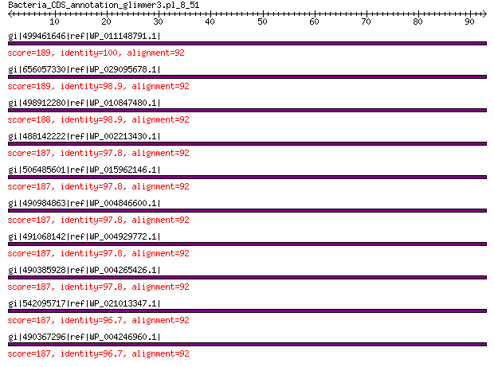

bitscore colors: <40, 40-50 , 50-80, 80-200, >200
 BLASTP 2.2.31+
Reference: Stephen F. Altschul, Thomas L. Madden, Alejandro A.
Schaffer, Jinghui Zhang, Zheng Zhang, Webb Miller, and David J.
Lipman (1997), "Gapped BLAST and PSI-BLAST: a new generation of
protein database search programs", Nucleic Acids Res. 25:3389-3402.
Reference for composition-based statistics: Alejandro A. Schaffer,
L. Aravind, Thomas L. Madden, Sergei Shavirin, John L. Spouge, Yuri
I. Wolf, Eugene V. Koonin, and Stephen F. Altschul (2001),
"Improving the accuracy of PSI-BLAST protein database searches with
composition-based statistics and other refinements", Nucleic Acids
Res. 29:2994-3005.
Database: All non-redundant GenBank CDS translations+PDB+SwissProt+PIR+PRF
excluding environmental samples from WGS projects
49,011,213 sequences; 17,563,301,199 total letters
Query= Bacteria_CDS_annotation_glimmer3.pl_8_51
Length=92
Score E
Sequences producing significant alignments: (Bits) Value
gi|499461646|ref|WP_011148791.1| MULTISPECIES: 30S ribosomal pro... 189 5e-60
gi|656057330|ref|WP_029095678.1| 30S ribosomal protein S19 189 8e-60
gi|498912280|ref|WP_010847480.1| 30S ribosomal protein S19 188 2e-59
gi|488142222|ref|WP_002213430.1| MULTISPECIES: 30S ribosomal pro... 187 2e-59
gi|506485601|ref|WP_015962146.1| SSU ribosomal protein S19P 187 2e-59
gi|490984863|ref|WP_004846600.1| MULTISPECIES: 30S ribosomal pro... 187 2e-59
gi|491068142|ref|WP_004929772.1| MULTISPECIES: 30S ribosomal pro... 187 3e-59
gi|490385928|ref|WP_004265426.1| MULTISPECIES: 30S ribosomal pro... 187 3e-59
gi|542095717|ref|WP_021013347.1| MULTISPECIES: ribosomal protein... 187 4e-59
gi|490367296|ref|WP_004246960.1| MULTISPECIES: 30S ribosomal pro... 187 5e-59
>gi|499461646|ref|WP_011148791.1| MULTISPECIES: 30S ribosomal protein S19 [Enterobacteriaceae]
gi|37528539|ref|NP_931884.1| 30S ribosomal protein S19 [Photorhabdus luminescens subsp. laumondii
TTO1]
gi|253991684|ref|YP_003043040.1| 30S ribosomal protein S19 [Photorhabdus asymbiotica]
gi|290477188|ref|YP_003470103.1| 30S ribosomal protein S19 [Xenorhabdus bovienii SS-2004]
gi|54036396|sp|Q7MYF5.1|RS19_PHOLL RecName: Full=30S ribosomal protein S19 [Photorhabdus luminescens
subsp. laumondii TTO1]
gi|36787977|emb|CAE17094.1| 30S ribosomal protein S19 [Photorhabdus luminescens subsp. laumondii
TTO1]
gi|253783134|emb|CAQ86299.1| 30S ribosomal protein S19 [Photorhabdus asymbiotica]
gi|289176536|emb|CBJ83345.1| 30S ribosomal subunit protein S19 [Xenorhabdus bovienii SS-2004]
gi|530711217|gb|EQC02078.1| 30S ribosomal protein S19 [Photorhabdus temperata subsp. temperata
M1021]
gi|550875213|gb|ERT14246.1| 30S ribosomal protein S19 [Photorhabdus temperata J3]
gi|572731295|gb|ETS29484.1| SSU ribosomal protein S19P [Photorhabdus temperata subsp. khanii
NC19]
gi|575846153|emb|CDL84425.1| 30S ribosomal protein S19 [Xenorhabdus szentirmaii DSM 16338]
gi|575849916|emb|CDL87611.1| 30S ribosomal protein S19 [Xenorhabdus cabanillasii JM26]
gi|604177083|gb|EYU13824.1| SSU ribosomal protein S19P [Photorhabdus luminescens BA1]
gi|661559761|emb|CDG15992.1| 30S ribosomal protein S19 [Xenorhabdus doucetiae]
gi|661566770|emb|CDG23172.1| 30S ribosomal protein S19 [Xenorhabdus poinarii G6]
gi|662546826|gb|KER01464.1| SSU ribosomal protein S19P [Photorhabdus temperata subsp. temperata
Meg1]
gi|666603413|emb|CDH29094.1| 30S ribosomal subunit protein S19 [Xenorhabdus bovienii str.
Jollieti]
gi|666608325|emb|CDH05736.1| 30S ribosomal subunit protein S19 [Xenorhabdus bovienii str.
oregonense]
gi|666612585|emb|CDH19753.1| 30S ribosomal subunit protein S19 [Xenorhabdus bovienii str.
kraussei Quebec]
gi|666617972|emb|CDG87099.1| 30S ribosomal subunit protein S19 [Xenorhabdus bovienii str.
feltiae France]
gi|666621618|emb|CDG92299.1| 30S ribosomal subunit protein S19 [Xenorhabdus bovienii str.
feltiae Florida]
gi|666628092|emb|CDG99536.1| 30S ribosomal subunit protein S19 [Xenorhabdus bovienii str.
feltiae Moldova]
gi|666631603|emb|CDH31953.1| 30S ribosomal subunit protein S19 [Xenorhabdus bovienii str.
Intermedium]
gi|666634421|emb|CDH25420.1| 30S ribosomal subunit protein S19 [Xenorhabdus bovienii str.
kraussei Becker Underwood]
gi|668988324|emb|CDG95315.1| 30S ribosomal subunit protein S19 [Xenorhabdus bovienii str.
puntauvense]
Length=92
Score = 189 bits (480), Expect = 5e-60, Method: Compositional matrix adjust.
Identities = 92/92 (100%), Positives = 92/92 (100%), Gaps = 0/92 (0%)
Query 1 MPRSLKKGPFIDLHLLKKVEKAVESGDKKPIKTWSRRSTIFPNMIGLTIAVHNGRQHVPV 60
MPRSLKKGPFIDLHLLKKVEKAVESGDKKPIKTWSRRSTIFPNMIGLTIAVHNGRQHVPV
Sbjct 1 MPRSLKKGPFIDLHLLKKVEKAVESGDKKPIKTWSRRSTIFPNMIGLTIAVHNGRQHVPV 60
Query 61 FVSDEMVGHKLGEFAPTRTYRGHAADKKAKKR 92
FVSDEMVGHKLGEFAPTRTYRGHAADKKAKKR
Sbjct 61 FVSDEMVGHKLGEFAPTRTYRGHAADKKAKKR 92
>gi|656057330|ref|WP_029095678.1| 30S ribosomal protein S19 [Budvicia aquatica]
Length=92
Score = 189 bits (479), Expect = 8e-60, Method: Compositional matrix adjust.
Identities = 91/92 (99%), Positives = 92/92 (100%), Gaps = 0/92 (0%)
Query 1 MPRSLKKGPFIDLHLLKKVEKAVESGDKKPIKTWSRRSTIFPNMIGLTIAVHNGRQHVPV 60
MPRSLKKGPFIDLHLLKKVEKAVESGDKKP+KTWSRRSTIFPNMIGLTIAVHNGRQHVPV
Sbjct 1 MPRSLKKGPFIDLHLLKKVEKAVESGDKKPVKTWSRRSTIFPNMIGLTIAVHNGRQHVPV 60
Query 61 FVSDEMVGHKLGEFAPTRTYRGHAADKKAKKR 92
FVSDEMVGHKLGEFAPTRTYRGHAADKKAKKR
Sbjct 61 FVSDEMVGHKLGEFAPTRTYRGHAADKKAKKR 92
>gi|498912280|ref|WP_010847480.1| 30S ribosomal protein S19 [Xenorhabdus nematophila]
gi|300721369|ref|YP_003710640.1| 30S ribosomal protein S19 [Xenorhabdus nematophila ATCC 19061]
gi|297627857|emb|CBJ88403.1| 30S ribosomal subunit protein S19 [Xenorhabdus nematophila ATCC
19061]
gi|484362891|emb|CCW30280.1| 30S ribosomal protein S19 [Xenorhabdus nematophila F1]
Length=92
Score = 188 bits (477), Expect = 2e-59, Method: Compositional matrix adjust.
Identities = 91/92 (99%), Positives = 92/92 (100%), Gaps = 0/92 (0%)
Query 1 MPRSLKKGPFIDLHLLKKVEKAVESGDKKPIKTWSRRSTIFPNMIGLTIAVHNGRQHVPV 60
MPRSLKKGPFIDLHLLKKVEKA+ESGDKKPIKTWSRRSTIFPNMIGLTIAVHNGRQHVPV
Sbjct 1 MPRSLKKGPFIDLHLLKKVEKAMESGDKKPIKTWSRRSTIFPNMIGLTIAVHNGRQHVPV 60
Query 61 FVSDEMVGHKLGEFAPTRTYRGHAADKKAKKR 92
FVSDEMVGHKLGEFAPTRTYRGHAADKKAKKR
Sbjct 61 FVSDEMVGHKLGEFAPTRTYRGHAADKKAKKR 92
>gi|488142222|ref|WP_002213430.1| MULTISPECIES: 30S ribosomal protein S19 [Yersinia]
gi|45440071|ref|NP_991610.1| 30S ribosomal protein S19 [Yersinia pestis biovar Microtus str.
91001]
gi|51597984|ref|YP_072175.1| 30S ribosomal protein S19 [Yersinia pseudotuberculosis IP 32953]
gi|108809250|ref|YP_653166.1| 30S ribosomal protein S19 [Yersinia pestis Antiqua]
gi|108814015|ref|YP_649782.1| 30S ribosomal protein S19 [Yersinia pestis Nepal516]
gi|123444094|ref|YP_001008064.1| 30S ribosomal protein S19 [Yersinia enterocolitica subsp. enterocolitica
8081]
gi|145597456|ref|YP_001161531.1| 30S ribosomal protein S19 [Yersinia pestis Pestoides F]
gi|153950875|ref|YP_001402859.1| 30S ribosomal protein S19 [Yersinia pseudotuberculosis IP 31758]
gi|162420192|ref|YP_001605179.1| 30S ribosomal protein S19 [Yersinia pestis Angola]
gi|170022548|ref|YP_001719053.1| 30S ribosomal protein S19 [Yersinia pseudotuberculosis YPIII]
gi|186897180|ref|YP_001874292.1| 30S ribosomal protein S19 [Yersinia pseudotuberculosis PB1/+]
gi|218927419|ref|YP_002345294.1| 30S ribosomal protein S19 [Yersinia pestis CO92]
gi|304336836|ref|YP_003856773.1| 30S ribosomal protein S19 [Yersinia pestis KIM10+]
gi|304653861|ref|YP_003864085.1| 30S ribosomal protein S19 [Yersinia pestis Z176003]
gi|384137810|ref|YP_005520512.1| 30S ribosomal protein S19 [Yersinia pestis A1122]
gi|384412842|ref|YP_005622204.1| 30S ribosomal protein S19 [Yersinia pestis biovar Medievalis
str. Harbin 35]
gi|20140072|sp|Q8ZJA8.1|RS19_YERPE RecName: Full=30S ribosomal protein S19 [Yersinia pestis]
gi|55977769|sp|P11256.4|RS19_YERPS RecName: Full=30S ribosomal protein S19 [Yersinia pseudotuberculosis
IP 32953]
gi|119367198|sp|Q1C2V1.1|RS19_YERPA RecName: Full=30S ribosomal protein S19 [Yersinia pestis Antiqua]
gi|119367199|sp|Q1CCU8.1|RS19_YERPN RecName: Full=30S ribosomal protein S19 [Yersinia pestis Nepal516]
gi|166200001|sp|A1JS33.1|RS19_YERE8 RecName: Full=30S ribosomal protein S19 [Yersinia enterocolitica
subsp. enterocolitica 8081]
gi|166200002|sp|A4TGZ6.1|RS19_YERPP RecName: Full=30S ribosomal protein S19 [Yersinia pestis Pestoides
F]
gi|167011206|sp|A7FNN1.1|RS19_YERP3 RecName: Full=30S ribosomal protein S19 [Yersinia pseudotuberculosis
IP 31758]
gi|226735276|sp|B2K5M6.1|RS19_YERPB RecName: Full=30S ribosomal protein S19 [Yersinia pseudotuberculosis
PB1/+]
gi|226735277|sp|A9R900.1|RS19_YERPG RecName: Full=30S ribosomal protein S19 [Yersinia pestis Angola]
gi|226735278|sp|B1JIW5.1|RS19_YERPY RecName: Full=30S ribosomal protein S19 [Yersinia pseudotuberculosis
YPIII]
gi|45434926|gb|AAS60487.1| 30S ribosomal protein S19 [Yersinia pestis biovar Microtus str.
91001]
gi|51591266|emb|CAH22932.1| 30S ribosomal protein S19 [Yersinia pseudotuberculosis IP 32953]
gi|108777663|gb|ABG20182.1| SSU ribosomal protein S19P [Yersinia pestis Nepal516]
gi|108781163|gb|ABG15221.1| SSU ribosomal protein S19P [Yersinia pestis Antiqua]
gi|115346030|emb|CAL18896.1| 30S ribosomal protein S19 [Yersinia pestis CO92]
gi|122091055|emb|CAL13938.1| 30S ribosomal protein S19 [Yersinia enterocolitica subsp. enterocolitica
8081]
gi|145209152|gb|ABP38559.1| SSU ribosomal protein S19P [Yersinia pestis Pestoides F]
gi|149290147|gb|EDM40224.1| 30S ribosomal protein S19 [Yersinia pestis CA88-4125]
gi|152962370|gb|ABS49831.1| ribosomal protein S19 [Yersinia pseudotuberculosis IP 31758]
gi|162353007|gb|ABX86955.1| ribosomal protein S19 [Yersinia pestis Angola]
gi|165911688|gb|EDR30352.1| ribosomal protein S19 [Yersinia pestis biovar Orientalis str.
IP275]
gi|165920129|gb|EDR37430.1| ribosomal protein S19 [Yersinia pestis biovar Orientalis str.
F1991016]
gi|165990651|gb|EDR42952.1| ribosomal protein S19 [Yersinia pestis biovar Antiqua str. E1979001]
gi|166205477|gb|EDR49957.1| ribosomal protein S19 [Yersinia pestis biovar Antiqua str. B42003004]
gi|166963255|gb|EDR59276.1| ribosomal protein S19 [Yersinia pestis biovar Orientalis str.
MG05-1020]
gi|167051655|gb|EDR63063.1| ribosomal protein S19 [Yersinia pestis biovar Antiqua str. UG05-0454]
gi|167055305|gb|EDR65099.1| ribosomal protein S19 [Yersinia pestis biovar Mediaevalis str.
K1973002]
gi|169749082|gb|ACA66600.1| ribosomal protein S19 [Yersinia pseudotuberculosis YPIII]
gi|186700206|gb|ACC90835.1| ribosomal protein S19 [Yersinia pseudotuberculosis PB1/+]
gi|229678665|gb|EEO74770.1| 30S ribosomal subunit protein S19 [Yersinia pestis Nepal516]
gi|229690463|gb|EEO82517.1| 30S ribosomal subunit protein S19 [Yersinia pestis biovar Orientalis
str. India 195]
gi|229696437|gb|EEO86484.1| 30S ribosomal subunit protein S19 [Yersinia pestis biovar Orientalis
str. PEXU2]
gi|229706373|gb|EEO92380.1| 30S ribosomal subunit protein S19 [Yersinia pestis Pestoides
A]
gi|270336741|gb|EFA47518.1| 30S ribosomal protein S19 [Yersinia pestis KIM D27]
gi|320013346|gb|ADV96917.1| 30S ribosomal subunit protein S19 [Yersinia pestis biovar Medievalis
str. Harbin 35]
gi|330861851|emb|CBX72022.1| 30S ribosomal protein S19 [Yersinia enterocolitica W22703]
gi|342852939|gb|AEL71492.1| 30S ribosomal protein S19 [Yersinia pestis A1122]
gi|351779480|gb|EHB21589.1| 30S ribosomal protein S19 [Yersinia enterocolitica subsp. palearctica
PhRBD_Ye1]
gi|404512160|gb|EKA26012.1| 30S ribosomal protein S19 [Yersinia enterocolitica subsp. enterocolitica
WA-314]
gi|411177959|gb|EKS47971.1| 30S ribosomal protein S19 [Yersinia pestis INS]
gi|486107592|emb|CCV39420.1| 30S ribosomal protein S19 [Yersinia enterocolitica (type O:9)
str. YE56/03]
gi|507496925|gb|EOR66742.1| 30S ribosomal protein S19 [Yersinia enterocolitica subsp. palearctica
YE-149]
gi|507504732|gb|EOR74353.1| 30S ribosomal protein S19 [Yersinia enterocolitica subsp. palearctica
YE-150]
gi|507505406|gb|EOR75006.1| 30S ribosomal protein S19 [Yersinia enterocolitica subsp. palearctica
YE-P1]
gi|507508591|gb|EOR78128.1| 30S ribosomal protein S19 [Yersinia enterocolitica subsp. palearctica
YE-P4]
gi|510411303|emb|CCV59874.1| 30S ribosomal protein S19 [Yersinia enterocolitica (type O:2)
str. YE3094/96]
gi|510492246|emb|CCV31585.1| 30S ribosomal protein S19 [Yersinia enterocolitica (type O:9)
str. YE212/02]
gi|510593774|emb|CCV55174.1| 30S ribosomal protein S19 [Yersinia enterocolitica (type O:3)
str. YE12/03]
gi|545727658|emb|CCV47384.1| 30S ribosomal protein S19 [Yersinia enterocolitica (type O:5,27)
str. YE149/02]
gi|550619995|gb|ERP71266.1| 30S ribosomal protein S19 [Yersinia pestis S3]
gi|550620616|gb|ERP71854.1| 30S ribosomal protein S19 [Yersinia pestis 24H]
gi|550621178|gb|ERP72391.1| 30S ribosomal protein S19 [Yersinia pestis 113]
gi|550631548|gb|ERP82085.1| 30S ribosomal protein S19 [Yersinia pestis 9]
gi|566684799|dbj|GAE12493.1| 30S ribosomal protein S19 [Yersinia pseudotuberculosis NBRC 105692]
gi|571264194|emb|CCQ42460.1| 30S ribosomal protein S19 [Yersinia enterocolitica (type O:5)
str. YE53/03]
gi|588286224|gb|AHK18960.1| 30S ribosomal protein S19 [Yersinia similis]
gi|594136738|gb|EXU71594.1| 30S ribosomal protein S19 [Yersinia pestis EV NIIEG]
gi|668663805|gb|KFB60098.1| 30S ribosomal protein S19 [Yersinia pestis subsp. pestis]
gi|669789587|gb|KFE38914.1| 30S ribosomal protein S19 [Yersinia ruckeri]
Length=92
Score = 187 bits (476), Expect = 2e-59, Method: Compositional matrix adjust.
Identities = 90/92 (98%), Positives = 92/92 (100%), Gaps = 0/92 (0%)
Query 1 MPRSLKKGPFIDLHLLKKVEKAVESGDKKPIKTWSRRSTIFPNMIGLTIAVHNGRQHVPV 60
MPRSLKKGPFIDLHLLKKVEKAVESGDKKPI+TWSRRST+FPNMIGLTIAVHNGRQHVPV
Sbjct 1 MPRSLKKGPFIDLHLLKKVEKAVESGDKKPIRTWSRRSTVFPNMIGLTIAVHNGRQHVPV 60
Query 61 FVSDEMVGHKLGEFAPTRTYRGHAADKKAKKR 92
FVSDEMVGHKLGEFAPTRTYRGHAADKKAKKR
Sbjct 61 FVSDEMVGHKLGEFAPTRTYRGHAADKKAKKR 92
>gi|506485601|ref|WP_015962146.1| SSU ribosomal protein S19P [Serratia marcescens]
gi|440232835|ref|YP_007346628.1| SSU ribosomal protein S19P [Serratia marcescens FGI94]
gi|440054540|gb|AGB84443.1| SSU ribosomal protein S19P [Serratia marcescens FGI94]
Length=92
Score = 187 bits (476), Expect = 2e-59, Method: Compositional matrix adjust.
Identities = 90/92 (98%), Positives = 92/92 (100%), Gaps = 0/92 (0%)
Query 1 MPRSLKKGPFIDLHLLKKVEKAVESGDKKPIKTWSRRSTIFPNMIGLTIAVHNGRQHVPV 60
MPRSLKKGPFIDLHLLKKVEKAVESGDKKP++TWSRRSTIFPNMIGLTIAVHNGRQHVPV
Sbjct 1 MPRSLKKGPFIDLHLLKKVEKAVESGDKKPVRTWSRRSTIFPNMIGLTIAVHNGRQHVPV 60
Query 61 FVSDEMVGHKLGEFAPTRTYRGHAADKKAKKR 92
FVSDEMVGHKLGEFAPTRTYRGHAADKKAKKR
Sbjct 61 FVSDEMVGHKLGEFAPTRTYRGHAADKKAKKR 92
>gi|490984863|ref|WP_004846600.1| MULTISPECIES: 30S ribosomal protein S19 [Enterobacteriaceae]
gi|316917588|gb|EFV38933.1| 30S ribosomal protein S19 [Enterobacteriaceae bacterium 9_2_54FAA]
gi|364568813|gb|EHM46451.1| ribosomal protein S19 [Hafnia alvei ATCC 51873]
gi|668975154|gb|KFC90038.1| SSU ribosomal protein S19p (S15e) [Hafnia alvei ATCC 13337]
Length=92
Score = 187 bits (476), Expect = 2e-59, Method: Compositional matrix adjust.
Identities = 90/92 (98%), Positives = 92/92 (100%), Gaps = 0/92 (0%)
Query 1 MPRSLKKGPFIDLHLLKKVEKAVESGDKKPIKTWSRRSTIFPNMIGLTIAVHNGRQHVPV 60
MPRSLKKGPFIDLHLLKKVEKAVESGDKKPIKTWSRRST+FPNMIGLTIAVHNGRQHVPV
Sbjct 1 MPRSLKKGPFIDLHLLKKVEKAVESGDKKPIKTWSRRSTVFPNMIGLTIAVHNGRQHVPV 60
Query 61 FVSDEMVGHKLGEFAPTRTYRGHAADKKAKKR 92
FV+DEMVGHKLGEFAPTRTYRGHAADKKAKKR
Sbjct 61 FVADEMVGHKLGEFAPTRTYRGHAADKKAKKR 92
>gi|491068142|ref|WP_004929772.1| MULTISPECIES: 30S ribosomal protein S19 [Gammaproteobacteria]
gi|50122947|ref|YP_052114.1| 30S ribosomal protein S19 [Pectobacterium atrosepticum SCRI1043]
gi|253690179|ref|YP_003019369.1| 30S ribosomal protein S19 [Pectobacterium carotovorum subsp.
carotovorum PC1]
gi|261823228|ref|YP_003261334.1| 30S ribosomal protein S19 [Pectobacterium wasabiae WPP163]
gi|322831076|ref|YP_004211103.1| 30S ribosomal protein S19 [Rahnella sp. Y9602]
gi|333929462|ref|YP_004503041.1| 30S ribosomal protein S19 [Serratia sp. AS12]
gi|333934415|ref|YP_004507993.1| 30S ribosomal protein S19 [Serratia plymuthica AS9]
gi|383188322|ref|YP_005198450.1| 30S ribosomal protein S19 [Rahnella aquatilis CIP 78.65 = ATCC
33071]
gi|384256244|ref|YP_005400178.1| 30S ribosomal protein S19 [Rahnella aquatilis HX2]
gi|386331285|ref|YP_006027455.1| 30S ribosomal protein S19 [Serratia sp. AS13]
gi|403060245|ref|YP_006648462.1| 30S ribosomal protein S19 [Pectobacterium carotovorum subsp.
carotovorum PCC21]
gi|448244252|ref|YP_007408305.1| 30S ribosomal subunit protein S19 [Serratia marcescens WW4]
gi|470156582|ref|YP_006285084.1| 30S ribosomal protein S19 [Pectobacterium sp. SCC3193]
gi|518650958|ref|YP_008140498.1| 30S ribosomal protein S19 [Serratia plymuthica 4Rx13]
gi|521170117|ref|YP_008161489.1| 30S ribosomal protein S19 [Serratia plymuthica S13]
gi|525694453|ref|YP_008232482.1| 30S ribosomal protein S19 [Serratia liquefaciens ATCC 27592]
gi|61215908|sp|Q6CZX4.1|RS19_PECAS RecName: Full=30S ribosomal protein S19 [Pectobacterium atrosepticum
SCRI1043]
gi|259494842|sp|C6DG70.1|RS19_PECCP RecName: Full=30S ribosomal protein S19 [Pectobacterium carotovorum
subsp. carotovorum PC1]
gi|49613473|emb|CAG76924.1| 30S ribosomal subunit protein S19 [Pectobacterium atrosepticum
SCRI1043]
gi|251756757|gb|ACT14833.1| ribosomal protein S19 [Pectobacterium carotovorum subsp. carotovorum
PC1]
gi|261607241|gb|ACX89727.1| ribosomal protein S19 [Pectobacterium wasabiae WPP163]
gi|291424217|gb|EFE97432.1| ribosomal protein S19 [Serratia odorifera DSM 4582]
gi|320029536|gb|EFW11565.1| 30S ribosomal subunit protein S19 [Serratia symbiotica str. Tucson]
gi|321166277|gb|ADW71976.1| ribosomal protein S19 [Rahnella sp. Y9602]
gi|333476022|gb|AEF47732.1| ribosomal protein S19 [Serratia plymuthica AS9]
gi|333493522|gb|AEF52684.1| ribosomal protein S19 [Serratia sp. AS12]
gi|333963618|gb|AEG30391.1| ribosomal protein S19 [Serratia sp. AS13]
gi|353673856|gb|EHD19889.1| ribosomal protein S19 [Brenneria sp. EniD312]
gi|371586580|gb|AEX50310.1| ribosomal protein S19, bacterial/organelle [Rahnella aquatilis
CIP 78.65 = ATCC 33071]
gi|380752220|gb|AFE56611.1| 30S ribosomal protein S19 [Rahnella aquatilis HX2]
gi|383293870|gb|EIC82227.1| 30S ribosomal protein S19 [Serratia sp. M24T3]
gi|385873692|gb|AFI92212.1| 30S ribosomal protein S19 [Pectobacterium sp. SCC3193]
gi|401704871|gb|EJS95061.1| 30S ribosomal protein S19 [Pectobacterium wasabiae CFBP 3304]
gi|402807571|gb|AFR05209.1| 30S ribosomal protein S19 [Pectobacterium carotovorum subsp.
carotovorum PCC21]
gi|407751954|gb|EKF62116.1| ribosomal protein S19 [Serratia plymuthica A30]
gi|445214616|gb|AGE20286.1| 30S ribosomal subunit protein S19 [Serratia marcescens WW4]
gi|453066291|gb|EMF07240.1| 30S ribosomal protein S19 [Serratia marcescens VGH107]
gi|514428086|gb|AGO57292.1| 30S ribosomal protein S19 [Serratia plymuthica 4Rx13]
gi|521013328|gb|AGP46330.1| 30S ribosomal protein S19 [Serratia plymuthica S13]
gi|523444272|gb|AGQ33183.1| 30S ribosomal protein S19 [Serratia liquefaciens ATCC 27592]
gi|542024400|gb|ERH70066.1| 30S ribosomal protein S19 [Serratia marcescens EGD-HP20]
gi|544006456|gb|ERK05309.1| SSU ribosomal protein S19p (S15e) [Serratia fonticola AU-AP2C]
gi|544006550|gb|ERK05397.1| SSU ribosomal protein S19p (S15e) [Serratia fonticola AU-P3(3)]
gi|560175617|emb|CDG14353.1| 30S ribosomal subunit protein S19 [Serratia marcescens subsp.
marcescens Db11]
gi|573012578|dbj|BAO35930.1| 30S ribosomal subunit protein S19 [Serratia marcescens SM39]
gi|573928619|gb|AHG19916.1| 30S ribosomal protein S19 [Serratia fonticola RB-25]
gi|575535861|gb|ETX36311.1| 30S ribosomal protein S19 [Serratia marcescens BIDMC 50]
gi|575543488|gb|ETX43911.1| 30S ribosomal protein S19 [Serratia marcescens BIDMC 44]
gi|612262640|gb|EZQ56239.1| 30S ribosomal protein S19 [Serratia marcescens BIDMC 81]
gi|612272424|gb|EZQ65916.1| 30S ribosomal protein S19 [Serratia marcescens BIDMC 80]
gi|619734302|gb|AHY09542.1| 30S ribosomal protein S19 [Serratia plymuthica]
gi|640856909|gb|AIA46007.1| 30S ribosomal protein S19 [Serratia sp. FS14]
gi|641641484|dbj|GAK29858.1| ribosomal protein S19 [Serratia liquefaciens FK01]
gi|641747332|gb|AIA72803.1| 30S ribosomal protein S19 [Pectobacterium atrosepticum]
gi|659666602|emb|CDG46967.1| 30S ribosomal protein S19 [Serratia symbiotica SCt-VLC]
gi|666391546|gb|KEY58707.1| 30S ribosomal protein S19 [Serratia sp. DD3]
gi|668656808|gb|KFB54202.1| 30S ribosomal protein S19 [Serratia marcescens]
gi|668698960|gb|KFB86661.1| 30S ribosomal protein S19 [Serratia grimesii]
gi|668961264|gb|KFC78787.1| SSU ribosomal protein S19p (S15e) [Ewingella americana ATCC 33852]
gi|669003902|gb|KFD15345.1| SSU ribosomal protein S19p (S15e) [Serratia marcescens subsp.
marcescens ATCC 13880]
gi|669020385|emb|CDS56081.1| 30S ribosomal protein S19 [Serratia symbiotica]
gi|671733430|gb|KFF64809.1| 30S ribosomal protein S19 [Pectobacterium carotovorum subsp.
brasiliense]
gi|671734248|gb|KFF65620.1| 30S ribosomal protein S19 [Pectobacterium carotovorum subsp.
brasiliense]
gi|671738359|gb|KFF69685.1| 30S ribosomal protein S19 [Pectobacterium carotovorum subsp.
brasiliense]
gi|671767947|gb|KFF79127.1| 30S ribosomal protein S19 [Serratia marcescens]
gi|672091670|gb|KFF87695.1| 30S ribosomal protein S19 [Serratia nematodiphila]
gi|672934952|gb|AIK15787.1| 30S ribosomal subunit protein S19 [Pectobacterium atrosepticum]
gi|674722951|gb|KFK93024.1| 30S ribosomal protein S19 [Serratia sp. Ag2]
gi|674729406|gb|KFK99287.1| 30S ribosomal protein S19 [Serratia sp. Ag1]
gi|674735241|gb|KFL02238.1| ribosomal protein S19 [Serratia marcescens]
gi|676311454|gb|AIM23910.1| 30S ribosomal protein S19 [Serratia sp. SCBI]
Length=92
Score = 187 bits (475), Expect = 3e-59, Method: Compositional matrix adjust.
Identities = 90/92 (98%), Positives = 92/92 (100%), Gaps = 0/92 (0%)
Query 1 MPRSLKKGPFIDLHLLKKVEKAVESGDKKPIKTWSRRSTIFPNMIGLTIAVHNGRQHVPV 60
MPRSLKKGPFIDLHLLKKVEKAVESGDKKP++TWSRRSTIFPNMIGLTIAVHNGRQHVPV
Sbjct 1 MPRSLKKGPFIDLHLLKKVEKAVESGDKKPLRTWSRRSTIFPNMIGLTIAVHNGRQHVPV 60
Query 61 FVSDEMVGHKLGEFAPTRTYRGHAADKKAKKR 92
FVSDEMVGHKLGEFAPTRTYRGHAADKKAKKR
Sbjct 61 FVSDEMVGHKLGEFAPTRTYRGHAADKKAKKR 92
>gi|490385928|ref|WP_004265426.1| MULTISPECIES: 30S ribosomal protein S19 [Providencia]
gi|386743636|ref|YP_006216815.1| 30S ribosomal protein S19 [Providencia stuartii MRSN 2154]
gi|188019727|gb|EDU57767.1| ribosomal protein S19 [Providencia stuartii ATCC 25827]
gi|212688351|gb|EEB47879.1| ribosomal protein S19 [Providencia alcalifaciens DSM 30120]
gi|282564996|gb|EFB70531.1| ribosomal protein S19 [Providencia rustigianii DSM 4541]
gi|291310823|gb|EFE51276.1| ribosomal protein S19 [Providencia rettgeri DSM 1131]
gi|384480329|gb|AFH94124.1| 30S ribosomal protein S19 [Providencia stuartii MRSN 2154]
gi|414091167|gb|EKT52858.1| 30S ribosomal protein S19 [Providencia burhodogranariea DSM 19968]
gi|414097883|gb|EKT59535.1| 30S ribosomal protein S19 [Providencia rettgeri Dmel1]
gi|414100330|gb|EKT61949.1| 30S ribosomal protein S19 [Providencia alcalifaciens Dmel2]
gi|573498056|gb|ETS98598.1| 30S ribosomal protein S19 [Providencia alcalifaciens PAL-3]
gi|573506369|gb|ETT06556.1| 30S ribosomal protein S19 [Providencia alcalifaciens F90-2004]
gi|577056697|gb|EUC94172.1| 30S ribosomal protein S19 [Providencia alcalifaciens PAL-2]
gi|577064558|gb|EUD01474.1| 30S ribosomal protein S19 [Providencia alcalifaciens PAL-1]
gi|577067723|gb|EUD04462.1| 30S ribosomal protein S19 [Providencia alcalifaciens RIMD 1656011]
gi|577069158|gb|EUD05739.1| 30S ribosomal protein S19 [Providencia alcalifaciens R90-1475]
gi|577073792|gb|EUD10040.1| 30S ribosomal protein S19 [Providencia alcalifaciens 205/92]
Length=92
Score = 187 bits (475), Expect = 3e-59, Method: Compositional matrix adjust.
Identities = 90/92 (98%), Positives = 92/92 (100%), Gaps = 0/92 (0%)
Query 1 MPRSLKKGPFIDLHLLKKVEKAVESGDKKPIKTWSRRSTIFPNMIGLTIAVHNGRQHVPV 60
MPRSLKKGPFIDLHLLKKVEKAVESGDKKP+KTWSRRSTIFPNMIGLTIAVHNGRQHVPV
Sbjct 1 MPRSLKKGPFIDLHLLKKVEKAVESGDKKPLKTWSRRSTIFPNMIGLTIAVHNGRQHVPV 60
Query 61 FVSDEMVGHKLGEFAPTRTYRGHAADKKAKKR 92
FV+DEMVGHKLGEFAPTRTYRGHAADKKAKKR
Sbjct 61 FVTDEMVGHKLGEFAPTRTYRGHAADKKAKKR 92
>gi|542095717|ref|WP_021013347.1| MULTISPECIES: ribosomal protein S19 [Enterobacteriaceae]
gi|555227808|gb|ESN65257.1| hypothetical protein Ser39006_00068 [Serratia sp. ATCC 39006]
Length=92
Score = 187 bits (474), Expect = 4e-59, Method: Compositional matrix adjust.
Identities = 89/92 (97%), Positives = 92/92 (100%), Gaps = 0/92 (0%)
Query 1 MPRSLKKGPFIDLHLLKKVEKAVESGDKKPIKTWSRRSTIFPNMIGLTIAVHNGRQHVPV 60
MPRSLKKGPFIDLHLLKKVEKAVESGDKKP++TWSRRSTIFPNMIGLTIAVHNGRQHVPV
Sbjct 1 MPRSLKKGPFIDLHLLKKVEKAVESGDKKPLRTWSRRSTIFPNMIGLTIAVHNGRQHVPV 60
Query 61 FVSDEMVGHKLGEFAPTRTYRGHAADKKAKKR 92
F+SDEMVGHKLGEFAPTRTYRGHAADKKAKKR
Sbjct 61 FISDEMVGHKLGEFAPTRTYRGHAADKKAKKR 92
>gi|490367296|ref|WP_004246960.1| MULTISPECIES: 30S ribosomal protein S19 [Proteus]
gi|197287072|ref|YP_002152944.1| 30S ribosomal protein S19 [Proteus mirabilis HI4320]
gi|226735233|sp|B4F1I8.1|RS19_PROMH RecName: Full=30S ribosomal protein S19 [Proteus mirabilis HI4320]
gi|194684559|emb|CAR46386.1| 30S ribosomal protein S19 [Proteus mirabilis HI4320]
gi|225202671|gb|EEG85025.1| ribosomal protein S19 [Proteus penneri ATCC 35198]
gi|227165012|gb|EEI49851.1| ribosomal protein S19 [Proteus mirabilis ATCC 29906]
gi|404595472|gb|EKA96016.1| 30S ribosomal protein S19 [Proteus mirabilis WGLW6]
gi|404600174|gb|EKB00622.1| 30S ribosomal protein S19 [Proteus mirabilis WGLW4]
gi|558646604|gb|EST57096.1| 30S ribosomal protein S19 [Proteus hauseri ZMd44]
Length=92
Score = 187 bits (474), Expect = 5e-59, Method: Compositional matrix adjust.
Identities = 89/92 (97%), Positives = 92/92 (100%), Gaps = 0/92 (0%)
Query 1 MPRSLKKGPFIDLHLLKKVEKAVESGDKKPIKTWSRRSTIFPNMIGLTIAVHNGRQHVPV 60
MPRSLKKGPFIDLHLLKKVEKAVESGDKKP+KTWSRRSTIFPNMIGLTIAVHNGRQHVPV
Sbjct 1 MPRSLKKGPFIDLHLLKKVEKAVESGDKKPVKTWSRRSTIFPNMIGLTIAVHNGRQHVPV 60
Query 61 FVSDEMVGHKLGEFAPTRTYRGHAADKKAKKR 92
+VSDEMVGHKLGEFAPTRTYRGHAADKKAKK+
Sbjct 61 YVSDEMVGHKLGEFAPTRTYRGHAADKKAKKK 92
Lambda K H a alpha
0.319 0.135 0.404 0.792 4.96
Gapped
Lambda K H a alpha sigma
0.267 0.0410 0.140 1.90 42.6 43.6
Effective search space used: 435738179790